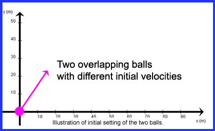

ACTIVITIES FOR THE TWO-BALLS APPLET
ACTIVITY 3: INTERSECTING TRAJECTORIES
Place both balls at the origin and set their velocity components as follows:
ball 1: v1x (0)= 15.6 m/s, v1y (0) = 23.0 m/s
ball 2: v2x (0) = 20.0 m/s, v2y (0) = 19.3 m/s
Make sure both balls have the same mass (0.1 kg). The mass of Ball 1 is preset by the applet to 0.1 kg, the mass of Ball 2 can be varied.
Calculate the launch speeds v1(0) and v2(0) .
Also calculate the launch angles q1(0) and q2(0),
and answer the following questions.
1. Which of the following statements is true?
(a) v1(0)
= v2(0)
(b) v1(0)
< v2(0)
(c) v1(0)
> v2
(0)
2. Which of the following statements is true?
(a) q1(0) = q2(0)
(b) q1(0) < q2(0)
(c) q1(0) > q2(0)
Make sure the applet is set to zero air resistance. Launch the balls and observe their trajectories. As expected, both
balls initially move with equal speeds, but in different directions. Their trajectories intersect at some point.
Let us call this point B.
3. Which of the following statements is true?
(a) Ball 1 (with the steeper launch angle) takes more time to reach point B
(b) Ball 2 (with the shallower launch angle) takes more time to reach point B
(c) both balls reach point B at the same time
4. At point B, the speed of ball 1 is
(a) greater than that of ball 2
(b) less than that of ball 2
(c) equal to that of ball 2
5. At point B, the y-component of velocity (absolute value) for ball 1 is
(a) greater than that of ball 2
(b) less than that of ball 2
(c) equal to that of ball 2
6. At point B, the x-component of velocity for ball 1 is
(a) greater than that of ball 2
(b) less than that of ball 2
(c) equal to that of ball 2
Extension of This Activity
(Answers to questions 3 through 6 will not change.)